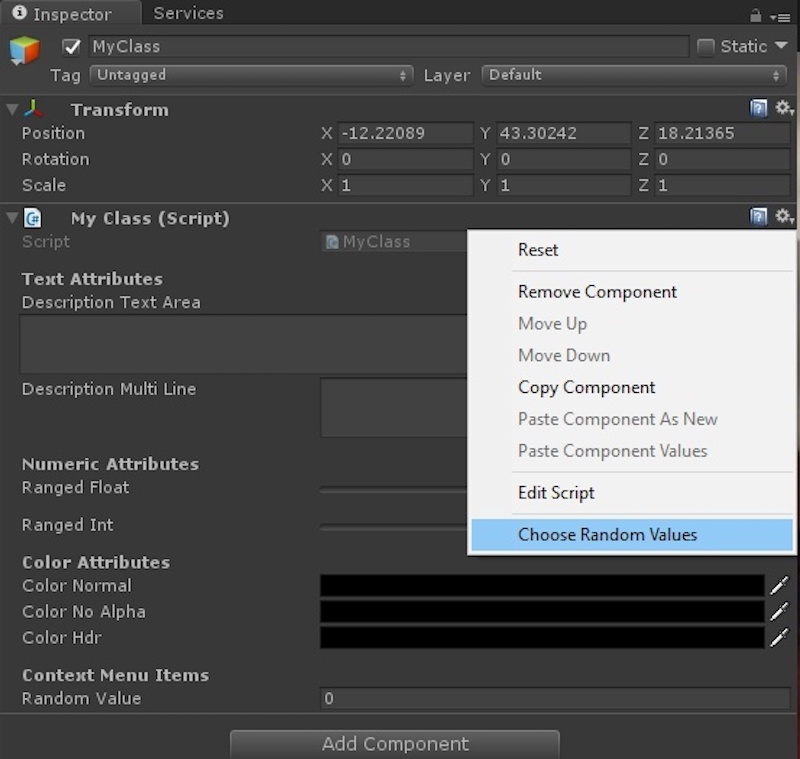

Node Graph Visualizer

Node Graph Visualizer
1. Introduction
- The Node Graph Visualizer is a graphical user interface that visually displays relationships between nodes in a Dependency Graph software architecture
-
The Dependency Graph (aka "Node Graph") structure is the industry standard for developing graphics applications
-
The corresponding Visualizer is simply a user-friendly and code-free interface that can be used to manipulate nodes in real-time rendering applications .
-
Maya, ZBrush, Houdini, Blender, Unity, Cinema 4D, and most other 3D Content Creation tools use a Dependency Graph for their codebase due its efficiency, flexibility, and compatibility with graphics applications.
- These softwares also include a code-free interface for technical users to create custom nodes and plug-ins. For example, Autodesk Maya's Hypershade was the blueprint for this visualizer project.
| Hypershade |
|---|
2. Goals and Objectives
- The UI design goals were:
- Create an intuitive and aesthetic interface for developers
- Streamline workflows and improve productivity
- Enable easy integration with existing C++ codebase
- Implementation Objectives:
- Smart Default Layout
- Draggable Nodes
- Pin Objects
- Instantiate new nodes
- Draw Connections
- Delete Nodes/Connections
- Edit Plug Attributes
- View Plug Attributes
Key Features
Viewing Modes

-
Simple
- Displays only one input plug and output plug
- Remaining plugs are hidden
-
Connected
- Displays only the input/output plugs that are actively connected
-
Full
- Displays all input/output plugs regardless of connection status
Attribute Editor
All Node-Based 3D Software architectures with a visual interface feature some kind of editor to customize node parameters. You may recognize this menu in Unity's UI:
| Unity Attribute Editor | My Attribute Editor |
|---|---|
|  |  |
- Users are able to select a specific plug in a node and access its data objects, parameters, and variable name
- Users can also click the Affects > button on the top right to view which downstream nodes are dependent on the selected plug
Smart Default Layout Algorithm
- The previous examples have been relatively simple in scale and complexity
- A good visualizer should be scalable to handle the rendering demands of large node networks
Question: How to draw the prettiest graph?
First, let's define the constraints of an aesthetic graph
-
Layer Assignment: There should be a clear hierarchy of nodes, where each node is assigned to a layer and each node is dependent only on nodes that reside in a preceding layer.
- This layout improves readability by introducing a uni-directional flow of information (left to right or top down)
- In Dependency Graph programming, it is crucial to see which nodes are further 'downstream' for debugging purposes
-
Crossing Reduction: Ideally, there should be no crossing of the connections between nodes. If crossing elimination is impossible, then the nodes should be drawn in a way that minimizes crossings
Best Approach
The optimal solution to the Layered Graph Drawing problem is known as the Sugiyama Technique. I used the set of algorithms described in this paper: An Efficient Implementation of Sugiyama’s Algorithm for Layered Graph Drawing (Eiglsperger et al. , 2005)
NOTE: This algorithm only works for Directed Acyclic Graphs (DAG) , so the first step in implementation is to identify eliminate all existing cycles.
Video Demo
3. Technical Specifications
Tools and Technologies:
- Qt Design Studio: Version 4.0
- Qt Framework: Version 6.6
- Programming Language: C++, qml
Platform Compatibility:
- Windows, macOS, Linux
- Ensure responsiveness across various screen sizes and resolutions
User Interface Design Guidelines:
- Consistent UI/UX design adhering to best practices
-
Accessibility considerations for differently-abled developers
-
Explanation of the research paper on graph layout algorithms
- Integration of graph layout algorithms into the GUI
- Details on the implementation approach and its relevance to the project
- Expected impact on the GUI's usability and functionality
5. Development Phases
Phase 1: Planning and Design
- Requirement gathering and analysis
- UI/UX wireframing and prototyping using Qt Design Studio
- Feedback collection and iterations
Phase 2: Implementation
- Front-end development using Qt Design Studio
- Integration of backend functionalities (if applicable)
- Implementation of graph layout algorithms
- Continuous testing and debugging
Phase 3: Quality Assurance and Testing
- Comprehensive testing across multiple platforms
- Usability testing with target users (developers)
- Bug fixing and performance optimization
Phase 4: Deployment and Documentation
- Packaging the GUI for different platforms
- Preparation of user documentation and guidelines
- Release and deployment strategies
6. Risk Assessment and Mitigation
- Identification of potential risks:
- Compatibility issues with different operating systems
- Complexity in integrating version control systems
- User acceptance challenges due to UI/UX design
- Strategies for risk mitigation:
- Regular testing and compatibility checks
- Collaboration with version control system providers
- Continuous user feedback and iterative design improvements
7. Timeline and Milestones

9. Conclusion
- The Design Goals for the project were to make an intuitive, readable, and aesthetic interface for Dependency Graph programming. I accomplished the following:
- Functioning user interface with draggable, instantiable, and customizable nodes and connections
- C++ compatible
- Node Graph layout algorithm implemented
- This project will increase developer productivity by providing an easy-to-use interface that streamlines 3D development workflows
- Future considerations and potential enhancements:
- More plug and data types
- Complex objets